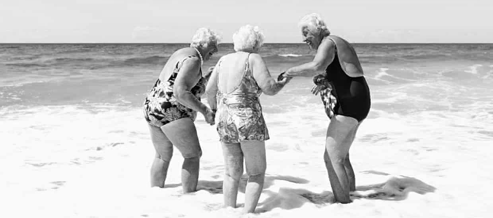

Aging is a
woman's secret power -
the data proves it
In less than 15 years, people aged 65 and up will outnumber those 18 and under for the
first time in U.S. history. This major demographic shift presents a good opportunity for
reevaluating our stereotypes and negative assumptions about getting older. Aging comes for us all,
so it’s time to tune into its upsides, particularly for women.
Right now, older women face a double challenge of ageism and sexism, and a common response to these
obstacles is to feel uncomfortable as one ages and try to hide it to the extent possible. But in fact,
being older is a tremendous advantage for many women, particularly women in leadership positions.
As our society shifts toward an older workforce, it’s extremely important for women to embrace their
age — to both spare themselves unnecessary grief and to reach their greatest potential...